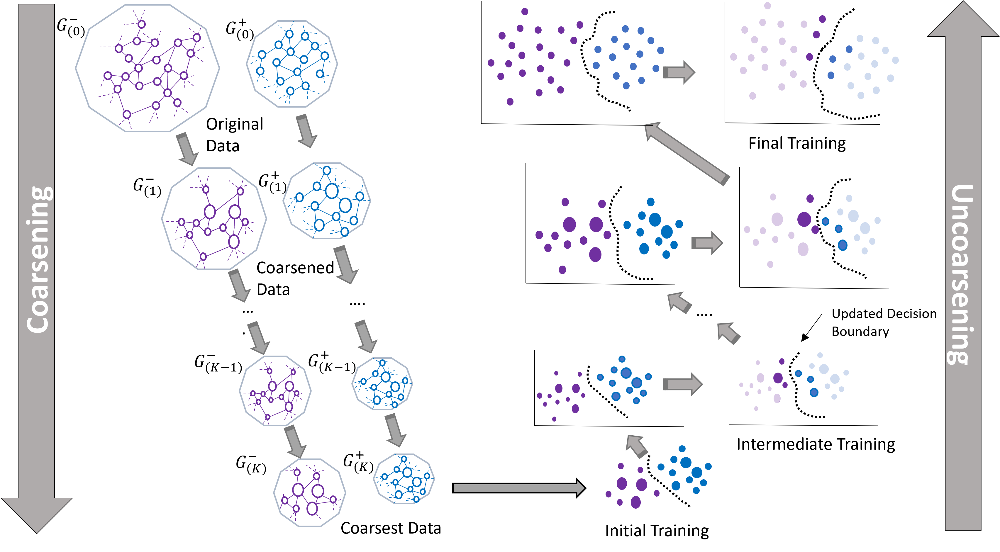
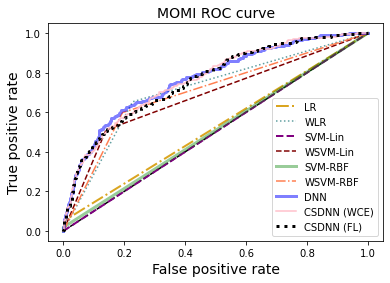

Research
My research centers on the development of advanced tools and methodologies aimed at revolutionizing precision medicine. I believe that the future of healthcare hinges on effective human/machine collaboration. By leveraging the power of machine learning and data analytics, my work focuses on creating tools that enable healthcare providers to treat and monitor their patients with accuracy and depth.
In today's data-rich environment, the sheer volume of available information presents both opportunities and challenges. My research addresses these challenges by developing methods for the effective cleaning and preparation of complex datasets, ensuring that machine learning algorithms can be applied in a meaningful way. While these algorithms offer immense potential, I believe it is crucial to avoid blind application. My work therefore also explores how to make these models more interpretable, ensuring that clinicians can remain actively involved in the decision-making process. Furthermore, I am dedicated to addressing the biases that often afflict machine learning models, striving to develop fairer and more equitable tools that can be trusted across diverse patient populations.
Multilevel Neural Networks

The rapid increase in data generation has made neural networks essential for successful learning, but it also leads to longer computation times and challenges like managing class imbalances. To tackle these issues, we propose a Multilevel Deep Neural Network (MLDNN) that scales efficiently with large datasets and addresses class imbalance by using graph representation and coarsening techniques. This approach ensures initial training on a more balanced dataset and improves performance during a refinement phase. Our results show that MLDNN achieves better or comparable accuracy to other methods while significantly reducing computation time.
Preeclampsia Prediction
Preeclampsia (PE) affects 8-10% of U.S. pregnancies annually, with a significant impact on racial minorities. Although there is no cure, early prediction can help mitigate complications. We developed a cost-sensitive deep neural network (CSDNN) to predict PE, addressing the challenges of data imbalance and racial disparities. Using diverse datasets from Texas, Oklahoma, and the Magee Obstetric Medical and Infant (MOMI) databases, our models identified key predictors for PE across various racial groups. The CSDNN model outperformed state-of-the-art techniques, particularly for minority populations, demonstrating the predictive power of clinical databases for PE among these groups.
Class III Obesity Cesarean Delivery
Obese women who undergo unplanned cesarean sections face a heightened risk of complications, particularly after unsuccessful labor inductions. With the rise in pre-pregnancy obesity rates, more women are at risk each year. Despite prior research on predicting cesarean likelihood, there's limited focus on class III obese women (BMI ≥ 40) who have undergone labor induction. In this study, we analyze a cohort of such women to identify those at higher risk for cesarean delivery. We propose a machine learning framework using various models and employ SHapley Additive exPlanations (SHAP) to interpret predictor significance. Our analysis reveals that logistic regression is most accurate for predicting cesareans in nulliparous women, while random forest performs best in the combined cohort.
Cancer Survivorship
Maintaining consistent long-term follow-up care is vital for childhood cancer survivors, as interruptions in annual visits can lead to poorer health outcomes. This study explores the emergence of a two-year gap in follow-up care among survivors in Oklahoma, using survival models. It contrasts traditional methods, such as Cox proportional hazards, with machine learning approaches like random survival forests and gradient boosting. To enhance interpretability, SurvSHAP is utilized to identify patterns associated with patients at risk of inadequate care.